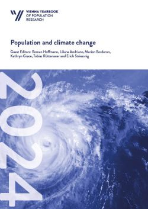
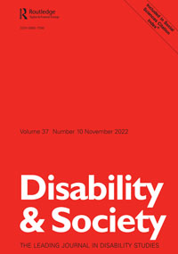
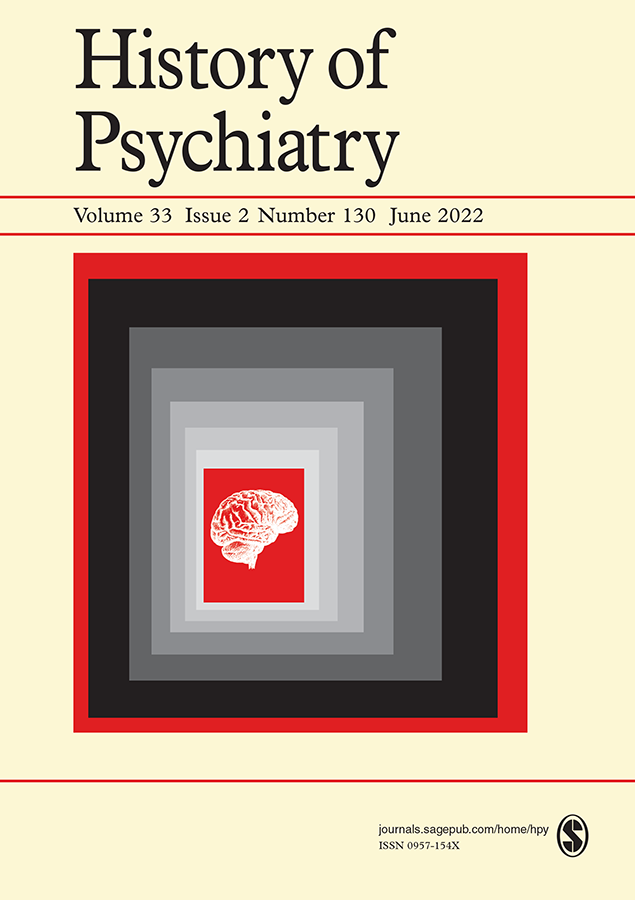
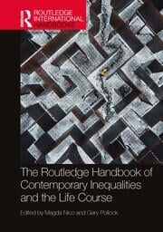
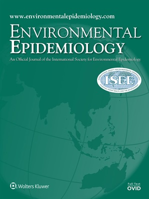
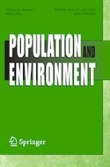
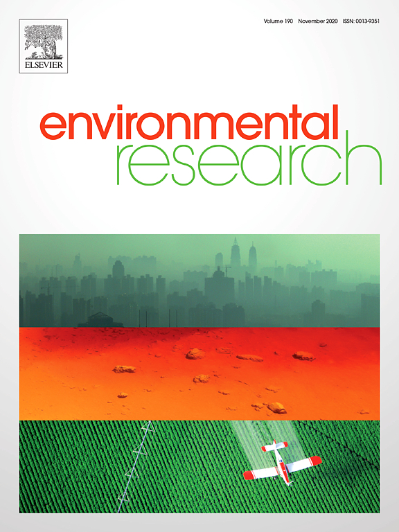
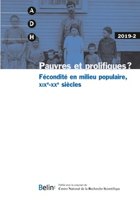
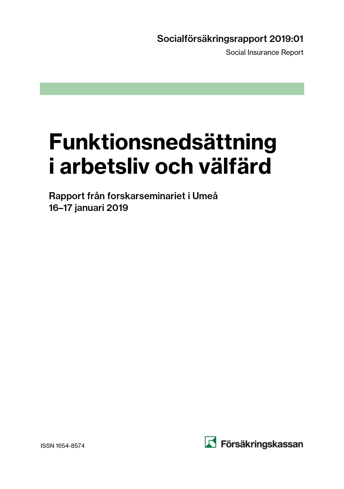

Johan Junkka
I am a historical demographer at the Centre for Demographic and Ageing Research, Umeå University, working on the study of demographic processes and social networks. In my PhD dissertation, I studied the role of social networks for the Swedish fertility transition, specifically that of voluntary associations and spatial communities.
Main research interests are in historical demography, social networks, social capital, population and climate and disability studies.
Publications
 Junkka, J. & Hiltunen, M. (2024). Temperature- and seasonality-related infectious disease mortality among infants: A retrospective time-series study of Sweden, 1868-1892. Vienna Yearbook of Population Research, 22. https://doi.org/10.1553/p-33g4-pgab
 Vikström, L., Junkka, J., & Karhina, K. (2023). Two centuries of disability disadvantages in Swedish partnerships. Disability & Society, 1–27. https://doi.org/10.1080/09687599.2022.2160924
 Eriksson, L., Junkka, J., Sandström, G., & Vikström, L. (2022). Supply or demand? Institutionalization of the mentally ill in the emerging Swedish welfare state, 1900–59. History of Psychiatry, 33(2), 180–199. https://doi.org/10.1177/0957154X221084976
 Vikström, L., Karhina, K. and Junkka, J. (2022). Two Centuries of Inequalities: Disability and Partnership in Sweden. In Nico, M, Pollock, G (Eds.), The Routledge Handbook of Contemporary Inequalities and the Life Course. Routledge: New York. 10.4324/9780429470059-14
 Karlsson, L., Junkka, J., Lundevaller, E. and Schumann, B. (2021). Ambient temperature and stillbirth risks in northern Sweden, 1880-1950. Environmental epidemiology. 5 (6). 10.1097/EE9.0000000000000176
 Karlsson, L., Junkka, J., Schumann, B. and Lundevaller, E. (2021). Socioeconomic disparities in climate vulnerability: neonatal mortality in northern Sweden, 1880–1950. Population and Environment. 10.1007/s11111-021-00383-9
 Junkka, J., Karlsson, L., Lundevaller, E., and Schumann, B. (2021). Climate vulnerability of Swedish newborns: Gender differences and time trends of temperature-related neonatal mortality, 1880–1950. Environmental Research. 10.1016/j.envres.2020.110400
 Junkka, J., Sandström, G. and Vikström, L. (2020).
The emergence of social gaps in mental health: A longitudinal population study in Sweden, 1900-1959.
PLOS ONE. 15 (4).
10.1371/journal.pone.0232462
Junkka, J., Sandström, G. and Vikström, L. (2020).
The emergence of social gaps in mental health: A longitudinal population study in Sweden, 1900-1959.
PLOS ONE. 15 (4).
10.1371/journal.pone.0232462
 Junkka, J. (2019). Spatial diffusion of fertility decline in northern Sweden, 1850-1950. Annales de Démographie Historique. 138(2). 10.3917/adh.138.0083
 Vikström, L., Häggström Lundevaller, E., Junkka, J. and Haage, H. (2019). Ett annorlunda liv? Följder av funktionsnedsättningar i 1800-talets Sverige. Funktionsnedsättning i arbetsliv och välfärd, Försäkringskassan, Analys och prognos. 2019:01, 15-30. https://www.forsakringskassan.se/wps/wcm/connect/fac0708f-cade-48e1-9a03-df7e59d0407a/socialforsakringsrapport-2019-1.pdf
 Junkka, J. (2018)
Membership in and Presence of Voluntary Organisations during the Swedish Fertility Transition, 1880-1949.
Historical Life Course Studies. 5, 3-36.
10.51964/hlcs9335.
Junkka, J. (2018)
Membership in and Presence of Voluntary Organisations during the Swedish Fertility Transition, 1880-1949.
Historical Life Course Studies. 5, 3-36.
10.51964/hlcs9335.
 Junkka, J. (2018).
Shared practices. Social networks and fertility decline during the Swedish demographic transition, 1850-1950. Umeå: Umeå University.
http://umu.diva-portal.org
Junkka, J. (2018).
Shared practices. Social networks and fertility decline during the Swedish demographic transition, 1850-1950. Umeå: Umeå University.
http://umu.diva-portal.org
 Junkka, J. (2018).
Voluntary associations and net fertility during the Swedish demographic transition.
European Journal of Population. 34(5).
doi: 10.1007/s10680-018-9465-5
Junkka, J. (2018).
Voluntary associations and net fertility during the Swedish demographic transition.
European Journal of Population. 34(5).
doi: 10.1007/s10680-018-9465-5
Reproducable analysis github.com/junkka/voluntary-associations
 Junkka, J. and Edvinsson, S.
(2016).
Gender and fertility within the free churches in the Sundsvall region, Sweden, 1860-1921.
The History of the Family. 21(2).
doi: 10.1080/1081602X.2015.1043929
Junkka, J. and Edvinsson, S.
(2016).
Gender and fertility within the free churches in the Sundsvall region, Sweden, 1860-1921.
The History of the Family. 21(2).
doi: 10.1080/1081602X.2015.1043929
Authors copy and reproducable analysis github.com/junkka/freechurchfertility
Projects
 db2connect - Interface for DB2 databases, using the RJDBC package. Integrates with RStudio database connections pane.
db2connect - Interface for DB2 databases, using the RJDBC package. Integrates with RStudio database connections pane.
 ehahelper - Event history analysis helper package for R, including predict and tidying functions for coxme.
ehahelper - Event history analysis helper package for R, including predict and tidying functions for coxme.
 Tesseract OCR boxfile web editor - Web app for editing tesseract OCR box files, using the leaflet maping library and leaflet.draw.
Tesseract OCR boxfile web editor - Web app for editing tesseract OCR box files, using the leaflet maping library and leaflet.draw.
 Fertility transition research topic analysis - An interactive exploration of topics in fertility transition research from an LDA analysis of a large collection of scientific abstracts published 1964-2014.
Fertility transition research topic analysis - An interactive exploration of topics in fertility transition research from an LDA analysis of a large collection of scientific abstracts published 1964-2014.
 histmaps - A R data package of Swedish historical administrative boundaries for parishes and counties 1634-1990.
histmaps - A R data package of Swedish historical administrative boundaries for parishes and counties 1634-1990.
 swe-parish - Compilation of information on Swedish historical parishes.
swe-parish - Compilation of information on Swedish historical parishes.
 Bygdeå - a small village in Västerbotten.
Bygdeå - a small village in Västerbotten.
 meankielensanakirja.com- a dictionary for the minority language Meänkieli.
meankielensanakirja.com- a dictionary for the minority language Meänkieli.
 hisco - A R package for classification of HISCO codes to Historical social class systems.
hisco - A R package for classification of HISCO codes to Historical social class systems.
 swe-mfrt - Visualization of marital fertility rates by county in Sweden.
swe-mfrt - Visualization of marital fertility rates by county in Sweden.
Find Johan at
Umeå University
Twitter @johanjunkka
GitHub
Google Scholar
Until next time ♥